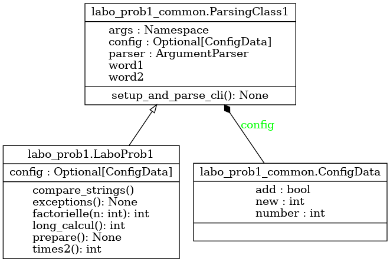

Module labo_prob1
Diagramme de classe
{kind=link}
Code du module
Code pour explorer le premier exercice du laboratoire - APP du cours GIF270
- L’exercice 1 touche le débogage et les éléments suivants :
Utilisation de points d’arrêt (breakpoints) pour l’identification de problèmes d’exécution et de logique
Interruption d’exécution sans fin
Détection et traitement des exceptions
Copyright 2023-2025 Frédéric Mailhot et Université de Sherbrooke
- class labo_prob1.LaboProb1[source]
Bases :
ParsingClass1Création d’un ensemble de méthodes qui ont des comportements problématiques - Classe hérite de ParsingClass1, qui lit les paramètres de la ligne de commande - Les paramètres sont accessibles dans mp.args - Méthodes incluses : factorielle, times2, long_calcul, compare_strings, exceptions
- Initialisation d’une nouvelle instance de LaboProb1 :
Utilise l’initialisation de la classe héritée par LaboProb1 (ParsingClass1)
- Returns :
(void) : Au retour, l’objet est initialisé
- compare_strings()[source]
- Comparaison de chaînes de caractères utf-8 :
Deux chaînes de caractères sont d’apparence identique (lorsqu’on les utilise dans un print()), mais leur comparaison indique qu’elles ne le sont pas
- Args :
(void) : Les chaînes de caractères proviennent de l’objet lui-même
- Returns :
(void) : Aucun résultat à retourner
- exceptions() None[source]
- Exploration de diverses exceptions :
Par défaut, aucun traitement des exceptions
Si le paramètre -e est donné en ligne de commande, utiliser les (try/except) pour traiter les exceptions
Les (try/except) utilisés ne sont pas associés aux bonnes exceptions. Vous devez les corriger
- Args :
(void) : Tous les calculs sont faits à partir de valeurs locales
- Returns :
(void) : Aucune valeur de retour
- factorielle(n: int) int[source]
- Calcul de factorielle :
Appel récursif (sur n, n-1, n-2, …)
La fin de la récursion est déterminée par le champ fact_end
- Args :
n (int) : Le nombre pour lequel on cherche la factorielle
- Returns :
(long) : La valeur de (n!)
- long_calcul() int[source]
- Long calcul :
Calcule val + (val-1) + (val-2) + … + 1
val est tirée de l’objet lui-même (self.args.val)
- Args :
(void) : La valeur utilisée provient de l’objet lui-même
- Returns :
(long) : Le résultat du calcul
- labo_prob1.main() None[source]
- Démarrage de l’exercice 1 du labo :
Crée une instance de la classe LaboProb1, utilisée pour présenter différents problèmes à déboguer
Utiliser le paramètre -p (1, 2, 3, 4 ou 5) pour déterminer quel problème observer
- Utiliser le paramètre -e de concert avec -p 5
pour démarrer le traitement des exceptions inclus (mais à corriger)
- Returns :
(void) : Au retour, l’exécution est terminée
Note
Documentation créée le 20 févr. 2025.